Tanjungpura Network adalah penyedia layanan internet (micro ISP) di Kota Pontianak yang menjual paket internet bulanan (fiber/PPPoE) dan voucher WiFi hotspot.
Website terdaftar tanjungpuranet.itturbo.my.id adalah landing page (etalase): menampilkan produk, harga dalam Rupiah, kontak support, dan kebijakan. Proses checkout dan pembayaran dilakukan di Portal Pelanggan kami di gayatricorp.mixradius.com, sistem billing ISP (Mixradius) yang terintegrasi langsung dengan Duitku menggunakan akun merchant kami (DS36312). Setiap tombol "Beli" dan "Bayar" di landing page mengarah ke portal tersebut.
Arsitektur alur pembayaran
2. Tanggapan atas Permintaan Verifikasi Duitku
#
Permintaan Duitku
Pemenuhan
1
Mengaktifkan website terdaftar
Website https://tanjungpuranet.itturbo.my.id aktif dan dapat diakses publik (HTTPS).
2
Konten produk beserta deskripsi dan harga (Rupiah) di halaman utama
Bagian "Pilihan Paket Internet & Voucher" (#paket) menampilkan semua produk dengan deskripsi dan harga Rupiah, sama dengan produk yang dijual di Portal Pelanggan (lihat bagian 3).
3
Email, nomor telepon, dan alamat usaha sebagai kontak support di halaman utama
Bagian "Hubungi Tim Support Kami" (#kontak) dan footer: email smartplayground777@gmail.com, telepon +62 813-4743-0125, WhatsApp +62 858-6240-9576, alamat Jl. Tanjungpura No. 88, Kel. Benua Melayu Laut, Kec. Pontianak Selatan, Kota Pontianak, Kalimantan Barat 78122.
4
Fitur checkout/pembelian hingga pembayaran
Tombol Beli Voucher, Daftar & Berlangganan, dan Bayar Tagihan mengarah ke Portal Pelanggan, tempat pembeli mengisi data, checkout, dan membayar melalui Duitku. Bagian "Cara Membeli & Membayar" (#cara-bayar) menjelaskan langkahnya (lihat bagian 4–5).
5
Integrasi dengan Sandbox Duitku
Portal Pelanggan terhubung ke Duitku Sandbox dengan kode merchant DS36312 sebagai gateway utama. Callback: https://gayatricorp.mixradius.com/api/payment/callback/duitku. Bukti uji transaksi ada di bagian 7.
3. Produk & Harga
Harga di landing page sama dengan produk aktif di Portal Pelanggan untuk penjual Tanjungpura Network. Semua harga dalam Rupiah (IDR) dan tanpa biaya tambahan dari kami.
Produk
Jenis
Spesifikasi
Harga
Dibeli melalui
Bulanan 20 Mbps
Internet rumah (PPPoE / fiber)
s/d 20 Mbps, kuota unlimited, masa berlaku 1 bulan
Rp 200.000 / bulan
/register lalu invoice di /login
Bulanan 35 Mbps
Internet rumah (PPPoE / fiber)
s/d 35 Mbps, kuota unlimited, masa berlaku 1 bulan
Rp 320.000 / bulan
/register lalu invoice di /login
Voucher HS-3K
Voucher WiFi hotspot
Masa aktif 1 hari, s/d 5 Mbps, unlimited, 1 perangkat
Rp 3.000
/evoucher
Voucher HS-3D
Voucher WiFi hotspot
Masa aktif 3 hari, s/d 5 Mbps, unlimited, 1 perangkat
Rp 8.000
/evoucher
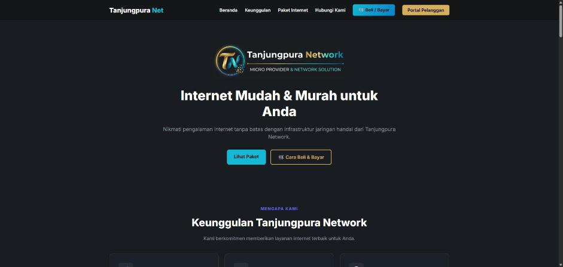
Gambar 1. Halaman utama landing page, dengan tombol "Beli / Bayar" dan "Cara Beli & Bayar".
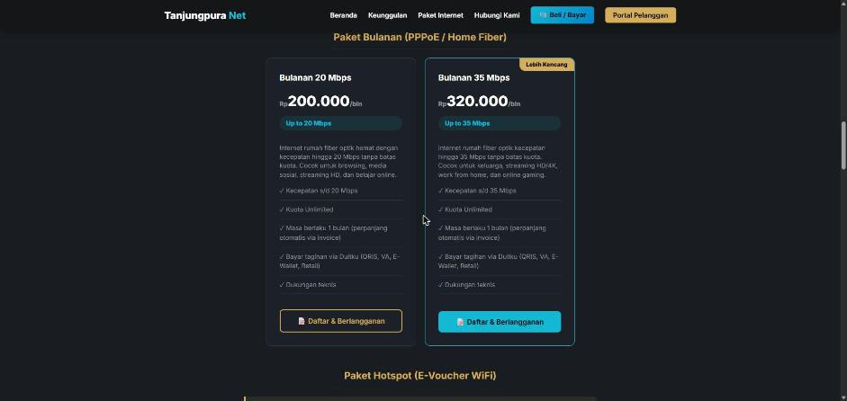
Gambar 1a. Paket bulanan (Bulanan 20 Mbps Rp 200.000 dan Bulanan 35 Mbps Rp 320.000), dengan tombol "Daftar & Berlangganan" menuju Portal Pelanggan.
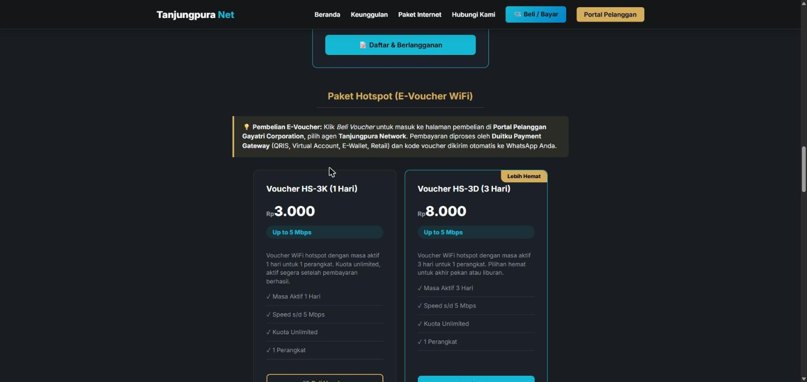
Gambar 2. Produk voucher beserta deskripsi dan harga Rupiah, dengan tombol "Beli Voucher" menuju Portal Pelanggan.
4. Alur Checkout Voucher WiFi (E-Voucher)
Di landing page, pembeli klik Beli Voucher. Halaman gayatricorp.mixradius.com/evoucher terbuka.
Pembeli memilih Seller/Agen: Tanjungpura Network, paket (HS-3K / HS-3D), jumlah, dan server.
Pembeli mengisi Nama Lengkap dan Nomor WhatsApp (email opsional), lalu menyetujui Syarat & Ketentuan dan Kebijakan Privasi. Ringkasan total ditampilkan.
Klik Lanjut ke Pembayaran, lalu verifikasi nomor dengan OTP WhatsApp untuk mencegah penyalahgunaan.
Sistem membuat invoice Duitku dan mengarahkan pembeli ke halaman pembayaran Duitku untuk memilih metode: QRIS, Virtual Account (BCA, Mandiri, BNI, Maybank, dll.), E-Wallet, atau gerai retail.
Setelah dibayar, Duitku mengirim callback ke Mixradius. Transaksi ditandai lunas, lalu kode voucher dibuat otomatis, ditampilkan di halaman konfirmasi, dan dikirim ke WhatsApp pembeli.
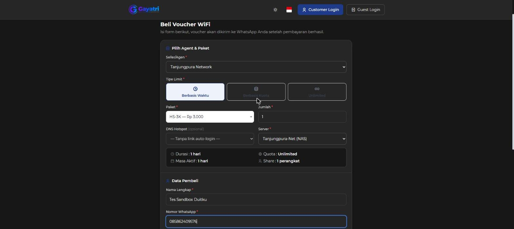
Gambar 3. Form beli voucher: agen Tanjungpura Network, paket HS-3K, detail paket, dan data pembeli.
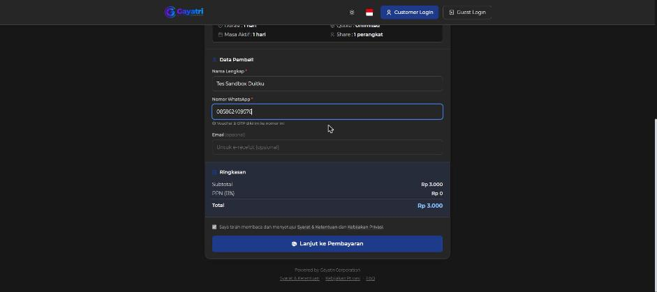
Gambar 4. Ringkasan total (Rp 3.000), persetujuan S&K, dan tombol "Lanjut ke Pembayaran".
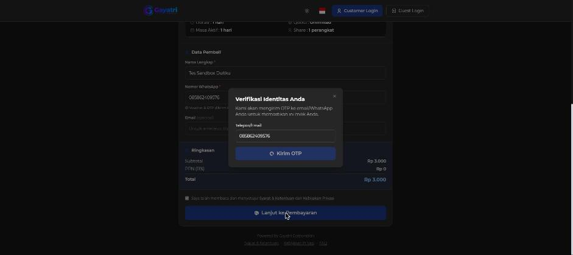
Gambar 5. Verifikasi nomor WhatsApp dengan OTP sebelum diarahkan ke pembayaran Duitku.
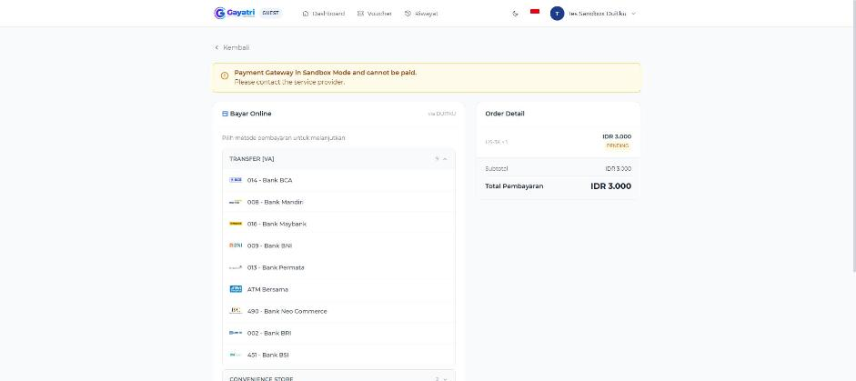
Gambar 5a. Halaman checkout "Bayar Online via DUITKU": daftar metode pembayaran (VA, Convenience Store, E-Wallet, Scan QR) dan Order Detail (HS-3K, IDR 3.000, PENDING). Banner kuning adalah penanda mode Sandbox dari sistem.
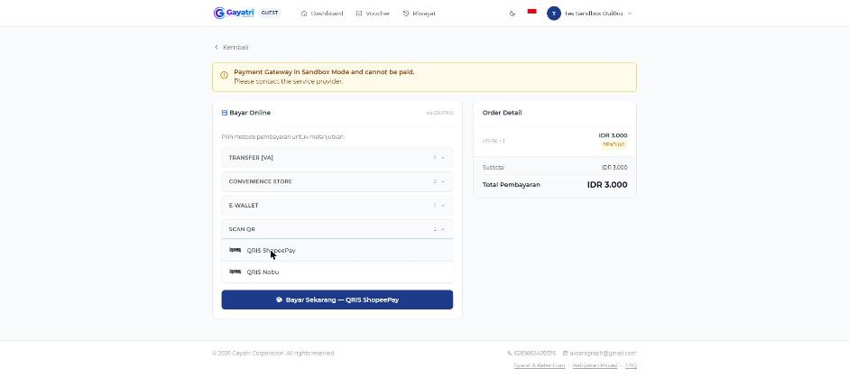
Gambar 5b. Pembeli memilih metode QRIS ShopeePay, lalu klik "Bayar Sekarang".
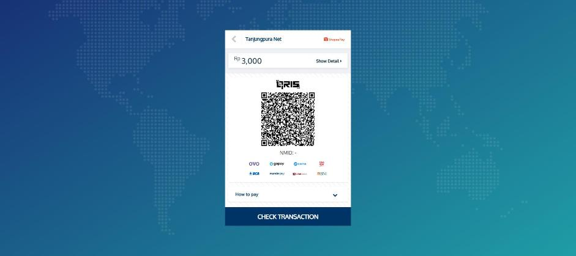
Gambar 5c. Halaman pembayaran QRIS Duitku (sandbox.duitku.com) atas nama merchant "Tanjungpura Net", nominal Rp 3.000.
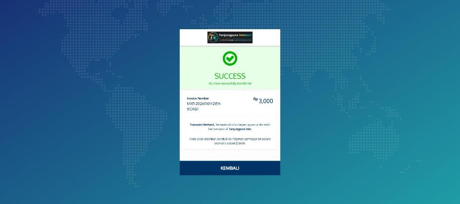
Gambar 5d. Duitku menampilkan "SUCCESS", lalu pembeli otomatis diarahkan kembali ke Portal Pelanggan.
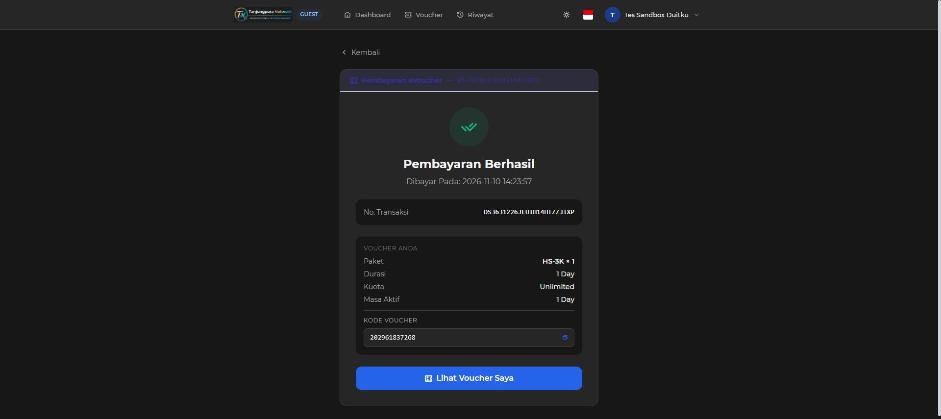
Gambar 5e. Portal Pelanggan: "Pembayaran Berhasil", No. Transaksi Duitku, dan kode voucher yang langsung diterbitkan.
5. Alur Paket Bulanan (Langganan Internet Rumah)
Di landing page, pembeli klik Daftar & Berlangganan. Halaman gayatricorp.mixradius.com/register terbuka.
Pembeli memilih tipe layanan PPP, penjual Tanjungpura Network, paket Bulanan 20 Mbps atau Bulanan 35 Mbps, lalu mengisi data diri dan alamat pemasangan.
Tim kami melakukan survei lokasi dan pemasangan. Pelanggan menerima akun Portal Pelanggan.
Setiap periode, sistem menerbitkan invoice dalam Rupiah. Pelanggan login di gayatricorp.mixradius.com/login, buka Tagihan, lalu klik Bayar untuk membayar melalui Duitku.
Callback Duitku menandai invoice lunas, dan masa aktif layanan otomatis diperpanjang.
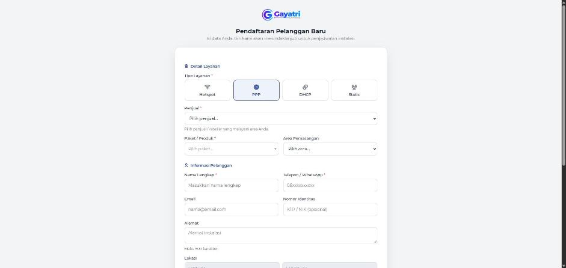
Gambar 6. Formulir pendaftaran pelanggan baru di Portal Pelanggan.
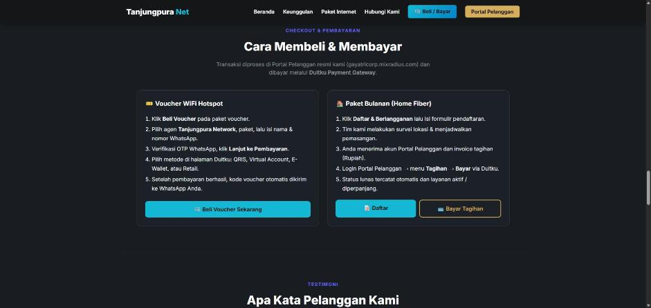
Gambar 7. Bagian "Cara Membeli & Membayar" di landing page.
6. Konfigurasi Duitku di Sistem
Parameter
Nilai
Gateway
Duitku (PRIMARY, aktif)
Environment
Sandbox (pindah ke Production setelah verifikasi disetujui)
S&K dan Privasi Portal Pelanggan: https://gayatricorp.mixradius.com/terms dan /privacy
Lampiran — Draf Email Balasan ke Duitku
Yth. Tim Verifikasi Duitku,
Terima kasih atas informasinya. Berikut update untuk akun wisnu18plus@gmail.com (Kode Merchant Sandbox: DS36312, website https://tanjungpuranet.itturbo.my.id/):
1. Website terdaftar sudah aktif dan dapat diakses publik.
2. Halaman utama menampilkan produk beserta deskripsi dan harga dalam Rupiah (bagian "Paket Internet": Bulanan 20 Mbps Rp 200.000/bulan, Bulanan 35 Mbps Rp 320.000/bulan, Voucher HS-3K Rp 3.000, Voucher HS-3D Rp 8.000).
3. Email, nomor telepon, dan alamat usaha tercantum sebagai kontak support di halaman utama (bagian "Hubungi Kami" dan footer).
4. Fitur checkout hingga pembayaran tersedia. Website kami adalah landing page; proses checkout dan pembayaran berjalan di Portal Pelanggan resmi kami https://gayatricorp.mixradius.com (sistem billing ISP kami). Tombol "Beli Voucher" mengarah ke https://gayatricorp.mixradius.com/evoucher, sedangkan "Daftar & Berlangganan" dan "Bayar Tagihan" mengarah ke /register dan /login. Langkahnya dijelaskan di bagian "Cara Membeli & Membayar" pada halaman utama.
5. Portal Pelanggan sudah terintegrasi dengan Duitku Sandbox (kode merchant DS36312) dengan URL callback https://gayatricorp.mixradius.com/api/payment/callback/duitku. Kami sudah melakukan uji transaksi sandbox dengan hasil terlampir.
Terlampir dokumen PDF berisi alur checkout dan pembayaran beserta tangkapan layar dan bukti uji transaksi sandbox.
Terima kasih.
Hormat kami,
Ida Bagus Wisnu
Tanjungpura Network
+62 813-4743-0125 · smartplayground777@gmail.com